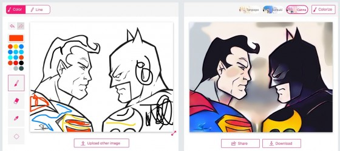

Graças à Inteligência Artificial, esta plataforma é capaz de analisar as diferentes áreas e formas de um esboço para colori-lo com coerência suficiente. Se você não fizer isso, com um par de cliques você pode guiá-lo para que o acabamento seja o que você está procurando.
Mais opções do que parece à primeira vista
Antes de decidir fazer o upload de um desenho próprio, o site nos fornece uma série de esboços de exemplo com os quais podemos verificar o potencial dessa plataforma.
Imagens em preto e branco usadas como base o site

Superman e Batman coloridos automaticamente pelo site
Por padrão, ele já aplica uma série de cores e no canto superior direito, temos a opção de escolher entre três efeitos diferentes. De qualquer forma, o mais interessante está na parte esquerda, pois com alguns traços poderemos indicar quais cores queremos em cada zona:{kind=link}
Superman e Batman coloridos automaticamente pelo site

O personagem Dustin de Strange Things colorido pelo site
Se você tiver um desenho feito em papel, poderá usar um aplicativo para digitalizá-lo e deixar que a inteligência artificial seja a única a colori-lo.
Fonte:
Post recomendados:
- Brasileiros s√£o os que mais desejam ter assistentes virtuais
- Programadores preferem programar para Linux e MySQL
- Robô que prepara hambúrgueres é demitido
- Waymo começa a testar caminhões autônomos
- As 3 Ondas da Inteligência Artificial
29/Mar/2018 21:42:07